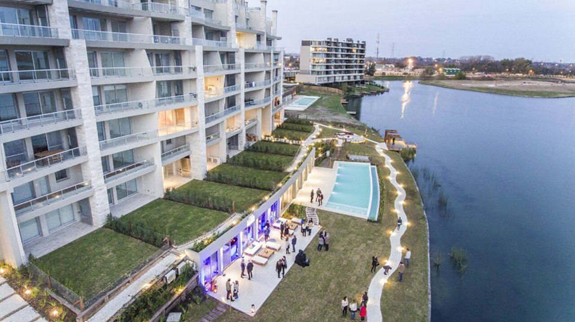
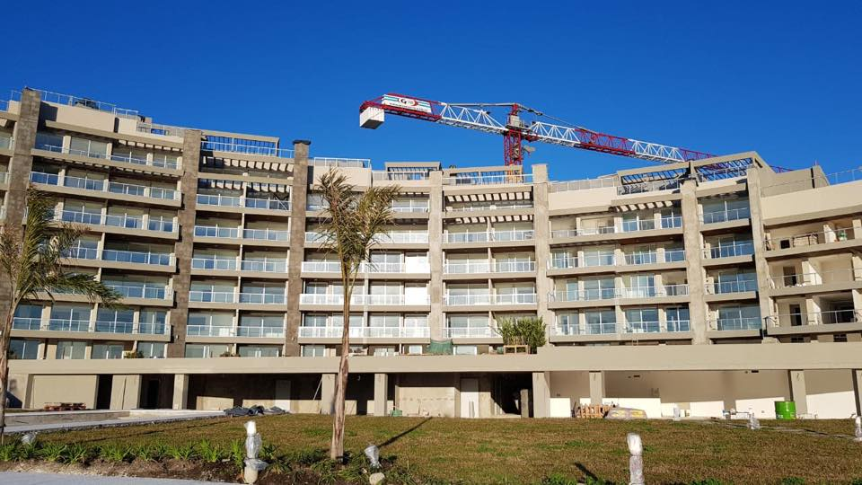
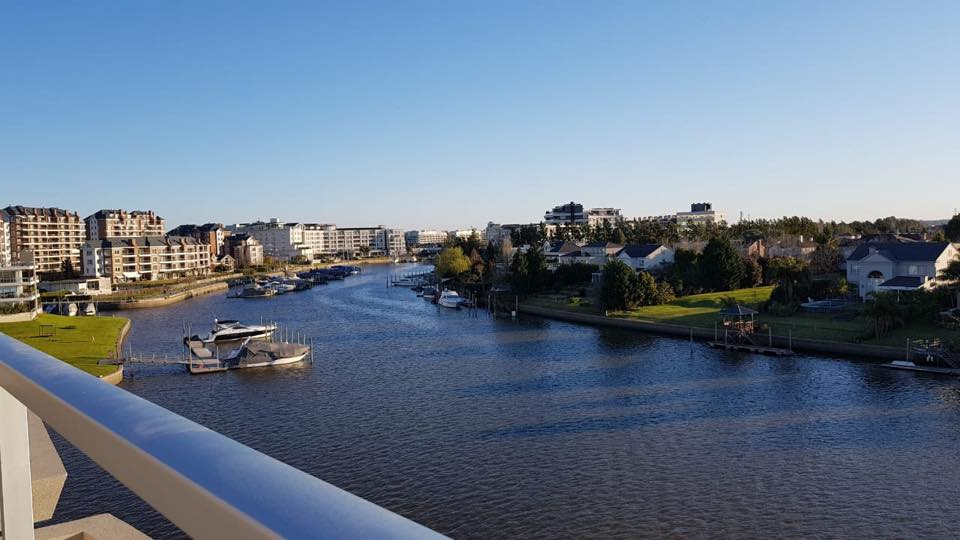
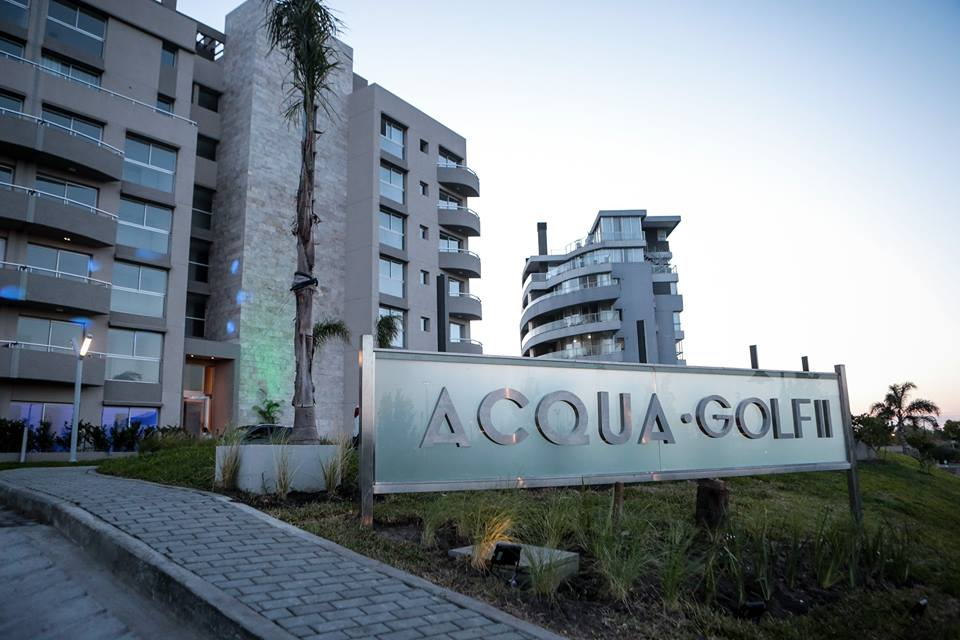
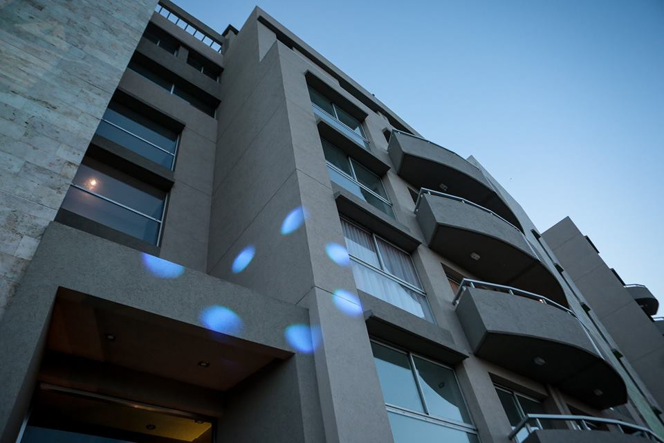
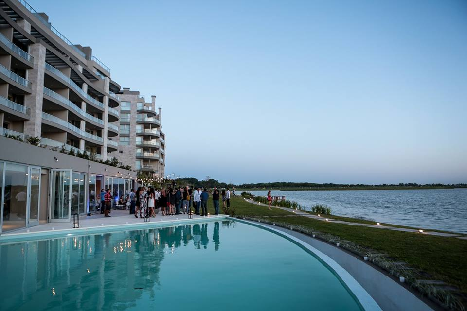

Proyectos
La arquitectura es un arte visual y los edificios hablan por si mismos




"Si la inspiración es el momento previo a la creación, el detalle constructivo es lo que la hace posible…”


